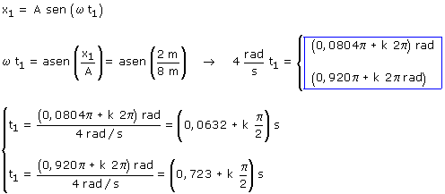
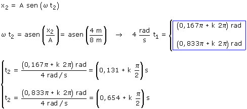

b) Ecuación del movimiento
Para saber cuanto tarda en ir de x1 = 2 m a x2 = 4 m hay que calcular cuando está en cada una de las posiciones por primera vez y restar los tiempos Aplicación Datos: x1 = 2 m, Incógnita t1  Pasa por x1 = 2 m, por primera vez, en el instante: t1 = 0.0632 s Aplicación Datos: x2 = A, Incógnita t2  Pasa por x2 = 4 m, por primera vez, en el instante: t2 = 0.167 s Tiempo invertido en el recorrido parcial: Δt = (0.167 - 0.0632) s = 0,104 s |